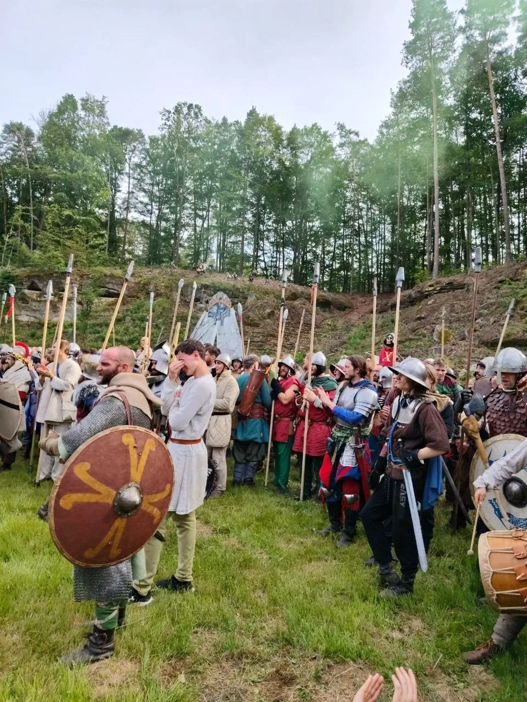

FREE WORKSHOP · SAT 14 NOVEMBER
Try historical fencing for free in Brno
14 Nov 2026, 12:00–14:30 · Orlovna Husovice, Vranovská 93 · Padded practice swords and basic gear provided for this workshop.
Advance registration required. Only the organiser's personal confirmation secures a place. Beginners welcome; no archery.
Družina Moravy · Brno
Your first battle or the next one?
Try historical fencing, meet real teammates and come back when you're ready. Trust grows across meetings, not from filling out a form.
Follow the next club meetupJoin our public announcements. No booking, payment, or legal association membership.
Ask about meeting the team
A community, not a one-off QR code.
Follow club news and ask what the next confirmed gathering looks like.
Come to a confirmed session, get to know the team and choose whether to return.
Train, take part in appropriate LARP events, create gear or simply enjoy the community. At your own pace.
Club participant ≠ legal member of the registered association. You do not need to become a member of Družina Moravy, z. s. to follow the club or express interest in activities. Any formal membership is separate and voluntary.
New paid HEMA bookings are paused pending legal, staff, venue, safety and insurance checks. The usual Monday/Saturday times are indicative; never travel or pay without written confirmation. Activity participation and consent for minors are checked separately.
All ways to participate and current conditions · Safety information